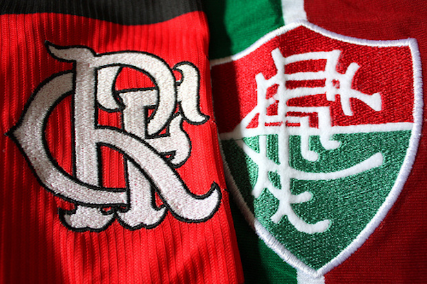

Curiosidades Fascinantes do Futebol no Brasil

1. O Primeiro Jogo de Futebol no Brasil
Em 1895, São Paulo foi palco do primeiro jogo de futebol no país, organizado por Charles Miller, o "pai do futebol brasileiro". A partida contou com funcionários de empresas inglesas que introduziram o esporte por aqui.

2. O Clube Mais Antigo em Atividade
O Sport Club Rio Grande, fundado em 1900, no Rio Grande do Sul, é o clube de futebol mais antigo do Brasil ainda em funcionamento.

3. O Campeonato Brasileiro
Embora o Campeonato Brasileiro tenha sido oficialmente criado em 1971, a competição nacional já existia de outras formas, como a Taça Brasil, criada em 1959, vencida pelo Bahia.

4. O Primeiro Estádio do Brasil
O Campo da Várzea, em São Paulo, foi o primeiro espaço dedicado ao futebol no Brasil. Ele começou a ser utilizado ainda no final do século XIX.

5. A Maior Goleada da História
O Botafogo venceu o Mangueira por incríveis 24x0 em 1909, no Campeonato Carioca. Este resultado ainda é a maior goleada registrada no futebol brasileiro.

6. O Primeiro Jogo Noturno
Em 1923, o futebol ganhou uma nova experiência: a iluminação artificial. O jogo aconteceu no campo da Associação Atlética São Bento, em São Paulo, marcando a primeira partida noturna no Brasil.

7. As Mulheres no Futebol
Entre 1941 e 1979, o futebol feminino foi proibido por lei no Brasil, sob a justificativa de que o esporte era "incompatível com a natureza feminina". Após o fim da proibição, o esporte cresceu e hoje é destaque no cenário internacional.

8. Fla-Flu: Uma Rivalidade Histórica
O clássico entre Flamengo e Fluminense, conhecido como "Fla-Flu", começou em 1912, quando jogadores do Fluminense saíram para fundar o time de futebol do Flamengo. A rivalidade segue como uma das mais emblemáticas do país.

9. O Clube dos 13
Em 1987, os maiores clubes do Brasil formaram o "Clube dos 13" para organizar o futebol nacional. A iniciativa resultou na criação da Copa União, um torneio que redefiniu os rumos do Campeonato Brasileiro.

10. O Maior Público em Jogos de Clubes
A final do Campeonato Carioca de 1963, entre Flamengo e Fluminense, reuniu 194.603 torcedores no Maracanã, estabelecendo o maior público da história em uma partida entre clubes no Brasil.

11. Primeira Transmissão no Rádio e na TV
O futebol chegou ao rádio em 1931, no jogo entre Vasco e Santos. A primeira partida transmitida pela televisão foi entre Santos e Palmeiras, em 1955, pela TV Tupi.

12. Times de Fábricas
Clubes como o São Caetano e o Bragantino começaram com fortes ligações industriais. Esse modelo ajudou pequenas cidades a entrarem no mapa do futebol nacional.